واژهنامهها و بازیابی با تطبیق غیردقیق
منبع: درس Dictionaries and tolerant retrieval از Hinrich Schütze و Christina Lioma. متن و شکلهای اصلی هر بخش زیر همان بخش باز میشوند.
اگر کاربر mon* یا informaton را بنویسد، موتور جستوجو چطور از این ورودی به واژه و از واژه به سند میرسد؟
از رخداد واژه تا مکان آن در سند
در جملهٔ زیر روی یک واژه بزن تا رخدادهای همنوعش را ببینی. پس از یکسانسازی حروف بزرگ و کوچک، ۱۲ رخداد ولی فقط ۹ صورت متمایز داریم. فاصله همیشه مرز واژه نیست: در چینی فاصله الزامی نیست و در آلمانی چند جزء میتوانند یک کلمه بسازند. دو تاریخ 3/20/91 و 20/3/91 نیز با وجود ظاهر متفاوت ممکن است یک روز را نشان دهند.
در نمایهٔ معکوس ساده، هر مدخل به شناسههای سند میرسد؛ اشارهگر پرش اجازه میدهد هنگام اشتراک، بخشی از یک فهرست مرتب را بدون از دست دادن پاسخ رد کنیم. در نمایهٔ مکانی، محل هر رخداد را هم داریم. در سند ۴ اسلاید ۸، TO در مکان ۱۶ و BE در ۱۷ آمده است. این برای to be کافی است، نه برای to be or not to be: همهٔ شش موقعیت باید با ترتیب و فاصلهٔ دقیق سازگار باشند. در پرسوجوی مجاورت، بهجای این زنجیرهٔ دقیق، یک بازهٔ فاصله مجاز است.
متن و شکلهای منبع · اسلایدهای 1 تا 10
اسلاید 1
Hinrich Schütze and Christina Lioma
Lecture 3: Dictionaries and tolerant retrieval
اسلاید 2
Overview
Recap
Dictionaries
Wildcard queries
Edit distance
Spelling correction
Soundex
اسلاید 3
Outline
Recap
Dictionaries
Wildcard queries
Edit distance
Spelling correction
Soundex
اسلاید 4
Type/token distinction
Token – an instance of a word or term occurring in a document
Type – an equivalence class of tokens
In June, the dog likes to chase the cat in the barn.
12 word tokens, 9 word types
اسلاید 5
Problems in tokenization
What are the delimiters? Space? Apostrophe? Hyphen?
For each of these: sometimes they delimit, sometimes they don’t.
No whitespace in many languages! (e.g., Chinese)
No whitespace in Dutch, German, Swedish compounds (Lebensversicherungsgesellschaftsangestellter)
اسلاید 6
Problems with equivalence classing
A term is an equivalence class of tokens.
How do we define equivalence classes?
Numbers (3/20/91 vs. 20/3/91)
Case folding
Stemming, Porter stemmer
Morphological analysis: inflectional vs. derivational
Equivalence classing problems in other languages
More complex morphology than in English
Finnish: a single verb may have 12,000 different forms
Accents, umlauts
اسلاید 7
Skip pointers
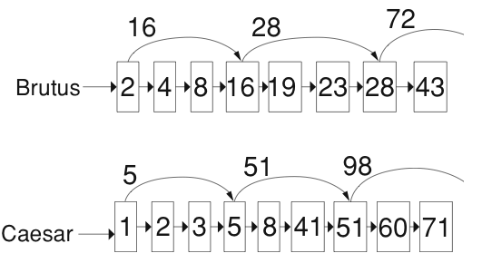
اسلاید 8
Positional indexes
Postings lists in a nonpositional index: each posting is just a docID
Postings lists in a positional index: each posting is a docID and a list of positions
Example query: “to1 be2 or3 not4 to5 be6”
TO, 993427:
‹ 1: ‹7, 18, 33, 72, 86, 231›;
2: ‹1, 17, 74, 222, 255›;
4: ‹8, 16, 190, 429, 433›;
5: ‹363, 367›;
7: ‹13, 23, 191›; . . . ›
BE, 178239:
‹ 1: ‹17, 25›;
4: ‹17, 191, 291, 430, 434›;
5: ‹14, 19, 101›; . . . › Document 4 is a match!
اسلاید 9
Positional indexes
With a positional index, we can answer phrase queries.
With a positional index, we can answer proximity queries.
اسلاید 10
Take-away
Tolerant retrieval: What to do if there is no exact match between query term and document term
Wildcard queries
Spelling correction
واژهنامه چه چیزی را نگه میدارد؟
واژگان مجموعهٔ ترمهاست؛ واژهنامه ساختاری است که آنها را قابل جستوجو میکند. سطر نمونهٔ اسلاید ۱۶ شامل واژه (۲۰ بایت)، تعداد سندهای حاوی آن (۴ بایت) و اشارهگر به فهرست سندها (۴ بایت) است. اگر واژه در یک سند ده بار بیاید، آن سند فقط یک واحد به بسامد سندی میافزاید.
برای پیدا کردن کلید دقیق، جدول هش معمولاً زمان ثابتِ مورد انتظار دارد، نه تضمین بدترین حالت؛ برخوردها باید حل شوند. برای پیدا کردن تمام ترمهایی که با automat آغاز میشوند، هش معمولی کلیدها را به ترتیب مناسب نمیچیند. در درخت دودویی متوازن میتوان در زمان O(log M) به شروع بازه رسید و سپس اعضای بازه را خواند. B-tree چند شاخه در هر گره دارد و هنگام دسترسی صفحهای به حافظهٔ جانبی میتواند تعداد خواندنها را کم کند. رشد واژگان و هزینهٔ نگهداشتن توازن در انتخاب ساختار مهماند.
متن و شکلهای منبع · اسلایدهای 11 تا 21
اسلاید 11
Outline
Recap
Dictionaries
Wildcard queries
Edit distance
Spelling correction
Soundex
اسلاید 12
Inverted index
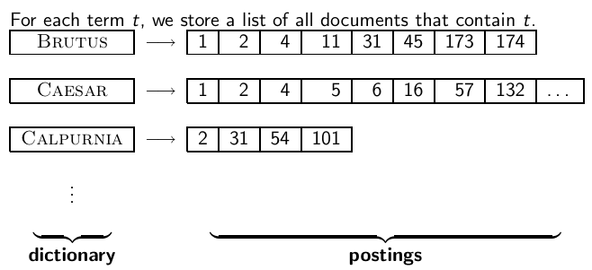
اسلاید 13
Inverted index
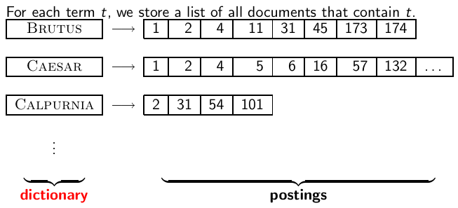
اسلاید 14
Dictionaries
The dictionary is the data structure for storing the term vocabulary.
Term vocabulary: the data
Dictionary: the data structure for storing the term vocabulary
اسلاید 15
Dictionary as array of fixed-width entries
For each term, we need to store a couple of items:
document frequency
pointer to postings list
. . .
Assume for the time being that we can store this information in a fixed-length entry.
Assume that we store these entries in an array.
اسلاید 16
Dictionary as array of fixed-width entries
space needed: 20 bytes 4 bytes 4 bytes
How do we look up a query term qi in this array at query time? That is: which data structure do we use to locate the entry (row) in the array where qi is stored?
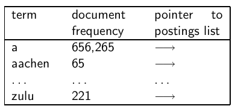
اسلاید 17
Data structures for looking up term
Two main classes of data structures: hashes and trees
Some IR systems use hashes, some use trees.
Criteria for when to use hashes vs. trees:
Is there a fixed number of terms or will it keep growing?
What are the relative frequencies with which various keys will be accessed?
How many terms are we likely to have?
اسلاید 18
Hashes
Each vocabulary term is hashed into an integer.
Try to avoid collisions
At query time, do the following: hash query term, resolve collisions, locate entry in fixed-width array
Pros: Lookup in a hash is faster than lookup in a tree.
Lookup time is constant.
Cons
no way to find minor variants (resume vs. résumé)
no prefix search (all terms starting with automat)
need to rehash everything periodically if vocabulary keeps growing
اسلاید 19
Trees
Trees solve the prefix problem (find all terms starting with automat).
Simplest tree: binary tree
Search is slightly slower than in hashes: O(logM), where M is the size of the vocabulary.
O(logM) only holds for balanced trees.
Rebalancing binary trees is expensive.
B-trees mitigate the rebalancing problem.
B-tree definition: every internal node has a number of children in the interval [a, b] where a, b are appropriate positive integers, e.g., [2, 4].
اسلاید 20
Binary tree
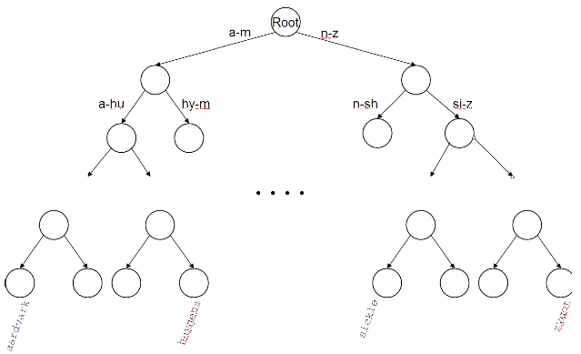
اسلاید 21
B-tree
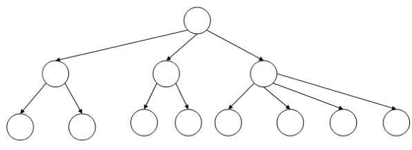
Wildcard: اول واژه، بعد سند
برای mon* در واژهنامهٔ مرتب، بازهٔ mon ≤ t < moo را میخوانیم. برای *mon در واژهنامهٔ وارونه به دنبال nom ≤ t < non میگردیم. برای m*nchen واژههای دارای پیشوند و پسوند مطلوب را اشتراک میگیریم؛ سپس فهرست اسناد واژههای پذیرفتهشده را اجتماع میگیریم.
در permuterm مرز $ را به واژه اضافه میکنیم. چرخشهای hello$، از جمله $hello، همه به hello اشاره دارند. برای hel*o ستاره را با چرخش به آخر میبریم: o$hel*. برای X* نیز پیشوند درست $X است. هزینهٔ این آسودگی، ذخیرهٔ چرخشهای متعدد است.
در ایندکس bigram، $m، mo و on به واژهها اشاره دارند. اشتراکشان برای mon* واژهٔ moon را هم میدهد؛ آزمون نهایی آن را حذف میکند. در [gen* universit*]، درون هر گروه سندها را با OR ترکیب میکنیم و میان دو گروه AND میگیریم؛ گسترشهای بزرگ پرهزینهاند. تمرین گوگل در مرجع، مثال تاریخی سال ۲۰۱۰ است.
متن و شکلهای منبع · اسلایدهای 22 تا 34
اسلاید 22
Outline
Recap
Dictionaries
Wildcard queries
Edit distance
Spelling correction
Soundex
اسلاید 23
Wildcard queries
mon*: find all docs containing any term beginning with mon
Easy with B-tree dictionary: retrieve all terms t in the range: mon ≤ t < moo
*mon: find all docs containing any term ending with mon
Maintain an additional tree for terms backwards
Then retrieve all terms t in the range: nom ≤ t < non
Result: A set of terms that are matches for wildcard query
Then retrieve documents that contain any of these terms
اسلاید 24
How to handle * in the middle of a term
Example: m*nchen
We could look up m* and *nchen in the B-tree and intersect the two term sets.
Expensive
Alternative: permuterm index
Basic idea: Rotate every wildcard query, so that the * occurs at the end.
Store each of these rotations in the dictionary, say, in a B-tree
اسلاید 25
Permuterm index
For term HELLO: add hello$, ello$h, llo$he, lo$hel, and o$hell to the B-tree where $ is a special symbol
اسلاید 26
Permuterm → term mapping
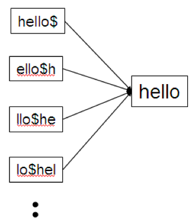
اسلاید 27
Permuterm index
For HELLO, we’ve stored: hello$, ello$h, llo$he, lo$hel, and o$hell
Queries
For X, look up X$
For X*, look up X*$
For *X, look up X$*
For *X*, look up X*
For X*Y, look up Y$X*
Example: For hel*o, look up o$hel*
Permuterm index would better be called a permuterm tree.
But permuterm index is the more common name.
اسلاید 28
Processing a lookup in the permuterm index
Rotate query wildcard to the right
Use B-tree lookup as before
Problem: Permuterm more than quadruples the size of the dictionary compared to a regular B-tree. (empirical number)
اسلاید 29
k-gram indexes
More space-efficient than permuterm index
Enumerate all character k-grams (sequence of k characters) occurring in a term
2-grams are called bigrams.
Example: from April is the cruelest month we get the bigrams: $a ap pr ri il l$ $i is s$ $t th he e$ $c cr ru ue el le es st t$ $m mo on nt h$
$ is a special word boundary symbol, as before.
Maintain an inverted index from bigrams to the terms that contain the bigram
اسلاید 30
Postings list in a 3-gram inverted index
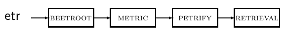
اسلاید 31
k-gram (bigram, trigram, . . . ) indexes
Note that we now have two different types of inverted indexes
The term-document inverted index for finding documents based on a query consisting of terms
The k-gram index for finding terms based on a query consisting of k-grams
اسلاید 32
Processing wildcarded terms in a bigram index
Query mon* can now be run as: $m AND mo AND on
Gets us all terms with the prefix mon . . .
. . . but also many “false positives” like MOON.
We must postfilter these terms against query.
Surviving terms are then looked up in the term-document inverted index.
k-gram index vs. permuterm index
k-gram index is more space efficient.
Permuterm index doesn’t require postfiltering.
اسلاید 33
Exercise
Google has very limited support for wildcard queries.
For example, this query doesn’t work very well on Google: [gen* universit*]
Intention: you are looking for the University of Geneva, but don’t know which accents to use for the French words for university and Geneva.
According to Google search basics, 2010-04-29: “Note that the * operator works only on whole words, not parts of words.”
But this is not entirely true. Try [pythag*] and [m*nchen]
Exercise: Why doesn’t Google fully support wildcard queries?
اسلاید 34
Processing wildcard queries in the term-document index
Problem 1: we must potentially execute a large number of Boolean queries.
Most straightforward semantics: Conjunction of disjunctions
For [gen* universit*]: geneva university OR geneva université OR genève university OR genève université OR general universities OR . . .
Very expensive
Problem 2: Users hate to type.
If abbreviated queries like [pyth* theo*] for [pythagoras’ theorem] are allowed, users will use them a lot.
This would significantly increase the cost of answering queries.
Somewhat alleviated by Google Suggest
فاصلهٔ ویرایشی: هزینهٔ تبدیل دو پیشوند
در تصحیح OCR خود سند تغییر میکند؛ در تصحیح پرسوجو میتوان پیشنهاد داد و متن سند را دست نزد. برای informaton → information یک درج کافی است. اما form خودش واژهای معتبر است؛ تشخیص from در مثال سیارک به بافت نیاز دارد. واژگان پیکره ممکن است حاوی غلط باشد؛ واژهنامهٔ تخصصی یا وزندار میتواند انتخاب بهتری باشد.
در فاصلهٔ Levenshtein حذف، درج یا جایگزینی یک واحد هزینه دارد؛ کپی رایگان است. در Damerau–Levenshtein جابهجایی دو حرف مجاور هم یک عمل است: cat → act در اولی ۲ و در دومی ۱ هزینه دارد. مقدار هر خانه فاصلهٔ دو پیشوند است. در مثال cats → fast سطرها پیشوندهای مبدأ و ستونها پیشوندهای مقصدند.
D[i,0] = i; D[0,j] = j
D[i,j] = min(D[i-1,j]+1, D[i,j-1]+1,
D[i-1,j-1]+(source[i-1] != target[j-1]))
اگر هزینهها وزندار باشند، میتوان اشتباه m → n را ارزانتر از m → q گرفت. سطر و ستون نخست نیز باید مجموع هزینههای واقعی درج یا حذف را نشان دهند.
متن و شکلهای منبع · اسلایدهای 35 تا 54
اسلاید 35
Outline
Recap
Dictionaries
Wildcard queries
Edit distance
Spelling correction
Soundex
اسلاید 36
Spelling correction
Two principal uses
Correcting documents being indexed
Correcting user queries
Two different methods for spelling correction
Isolated word spelling correction
Check each word on its own for misspelling
Will not catch typos resulting in correctly spelled words, e.g., an asteroid that fell form the sky
Context-sensitive spelling correction
Look at surrounding words
Can correct form/from error above
اسلاید 37
Correcting documents
We’re not interested in interactive spelling correction of documents (e.g., MS Word) in this class.
In IR, we use document correction primarily for OCR’ed documents. (OCR = optical character recognition)
The general philosophy in IR is: don’t change the documents.
اسلاید 38
Correcting queries
First: isolated word spelling correction
Premise 1: There is a list of “correct words” from which the correct spellings come.
Premise 2: We have a way of computing the distance between a misspelled word and a correct word.
Simple spelling correction algorithm: return the “correct” word that has the smallest distance to the misspelled word.
Example: informaton → information
For the list of correct words, we can use the vocabulary of all words that occur in our collection.
Why is this problematic?
اسلاید 39
Alternatives to using the term vocabulary
A standard dictionary (Webster’s, OED etc.)
An industry-specific dictionary (for specialized IR systems)
The term vocabulary of the collection, appropriately weighted
اسلاید 40
Distance between misspelled word and “correct” word
We will study several alternatives.
Edit distance and Levenshtein distance
Weighted edit distance
k-gram overlap
اسلاید 41
Edit distance
The edit distance between string s1 and string s2 is the minimum number of basic operations that convert s1 to s2.
Levenshtein distance: The admissible basic operations are insert, delete, and replace
Levenshtein distance dog-do: 1
Levenshtein distance cat-cart: 1
Levenshtein distance cat-cut: 1
Levenshtein distance cat-act: 2
Damerau-Levenshtein distance cat-act: 1
Damerau-Levenshtein includes transposition as a fourth possible operation.
اسلاید 42
Levenshtein distance: Computation
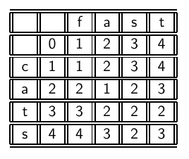
اسلاید 43
Levenshtein distance: Algorithm
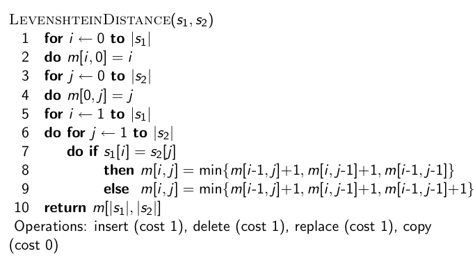
اسلاید 44
Levenshtein distance: Algorithm
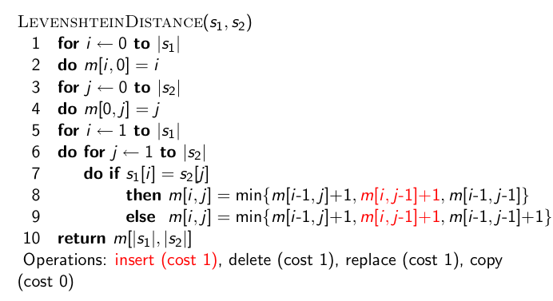
اسلاید 45
Levenshtein distance: Algorithm
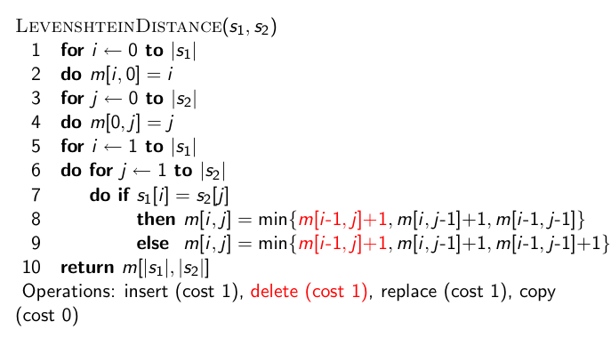
اسلاید 46
Levenshtein distance: Algorithm
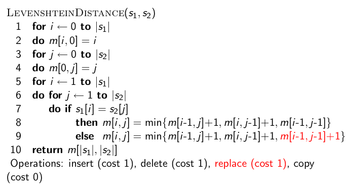
اسلاید 47
Levenshtein distance: Algorithm
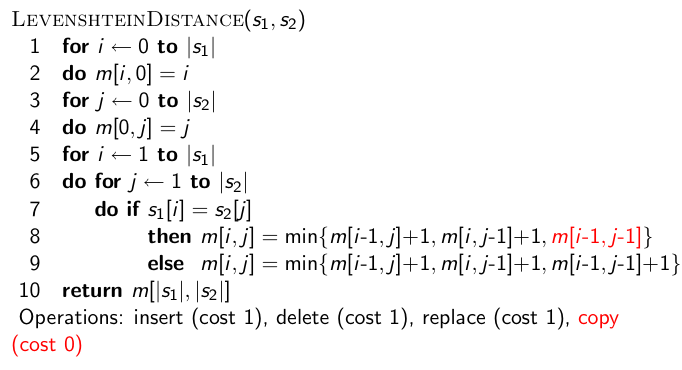
اسلاید 48
Levenshtein distance: Example
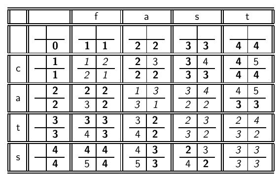
اسلاید 49
Each cell of Levenshtein matrix
cost of getting here from
my upper left neighbor
(copy or replace) | cost of getting here
from my upper neighbor
(delete)
cost of getting here from
my left neighbor (insert) | the minimum of the three possible “movements”;
the cheapest way of getting here
اسلاید 50
Levenshtein distance: Example
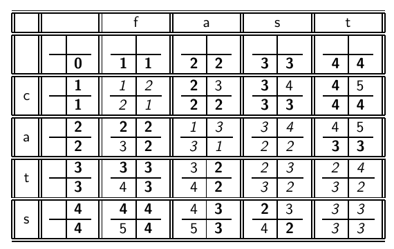
اسلاید 51
Dynamic programming (Cormen et al.)
Optimal substructure: The optimal solution to the problem contains within it subsolutions, i.e., optimal solutions to subproblems.
Overlapping subsolutions: The subsolutions overlap. These subsolutions are computed over and over again when computing the global optimal solution in a brute-force algorithm.
Subproblem in the case of edit distance: what is the edit distance of two prefixes
Overlapping subsolutions: We need most distances of prefixes 3 times – this corresponds to moving right, diagonally, down.
اسلاید 52
Weighted edit distance
As above, but weight of an operation depends on the characters involved.
Meant to capture keyboard errors, e.g., m more likely to be mistyped as n than as q.
Therefore, replacing m by n is a smaller edit distance than by q.
We now require a weight matrix as input.
Modify dynamic programming to handle weights
اسلاید 53
Using edit distance for spelling correction
Given query, first enumerate all character sequences within a preset (possibly weighted) edit distance
Intersect this set with our list of “correct” words
Then suggest terms in the intersection to the user.
→ exercise in a few slides
اسلاید 54
Exercise
Compute Levenshtein distance matrix for OSLO – SNOW
What are the Levenshtein editing operations that transform cat into catcat?
کارگاه ماتریس: OSLO → SNOW
از مرزها شروع کن: تبدیل رشتهٔ تهی به سه حرف، سه درج میخواهد. در هر گام، یک خانه را از همسایهٔ بالا (حذف)، چپ (درج) و قطر (کپی یا جایگزینی) به دست میآوریم. عدد پایینراست فاصله است؛ برای یافتن عملیات باید یک مسیر کمهزینه را از آن خانه به عقب دنبال کرد.
یک مسیر به ترتیب اجرا: حذف O نخست، کپی S، جایگزینی L با N، کپی O، درج W. بنابراین OSLO → SLO → SNO → SNOW سه ویرایش دارد. در cat → catcat نیز هزینهٔ بهینه سه است، ولی همترازی یکتا نیست:
target catcat
---cat
c---at
ca---t
cat---
متن و شکلهای منبع · اسلایدهای 55 تا 99
اسلاید 55
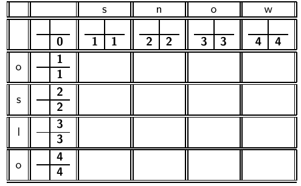
اسلاید 56
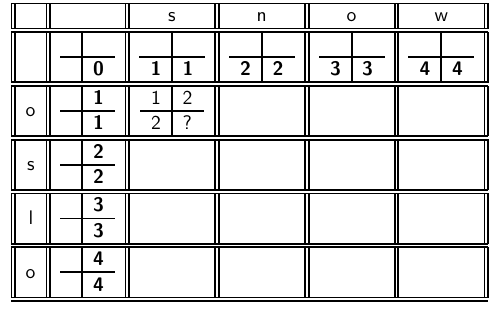
اسلاید 57
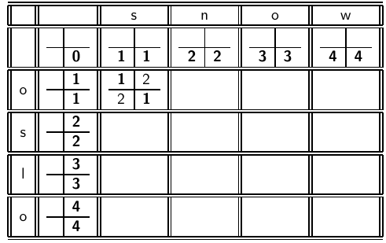
اسلاید 58
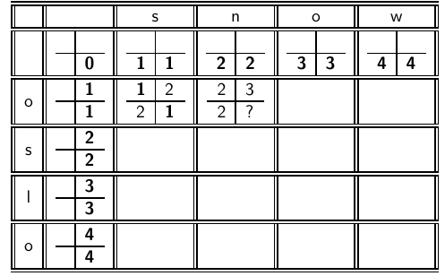
اسلاید 59
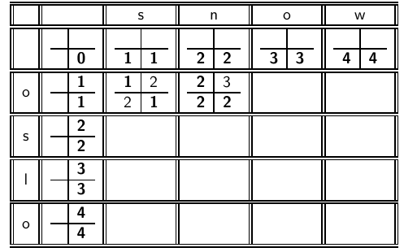
اسلاید 60
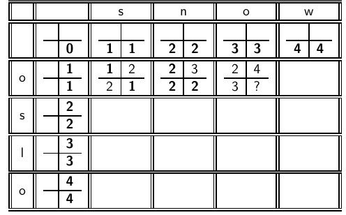
اسلاید 61
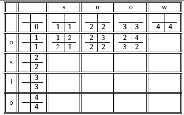
اسلاید 62
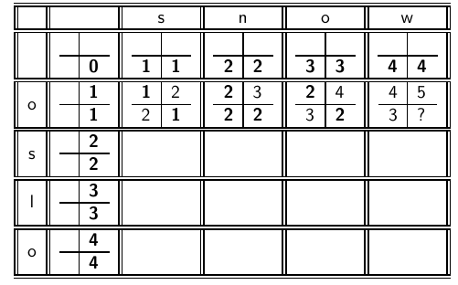
اسلاید 63
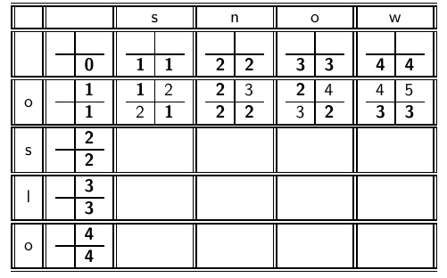
اسلاید 64
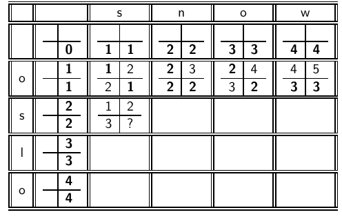
اسلاید 65
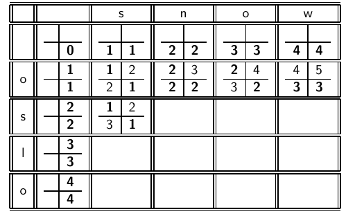
اسلاید 66
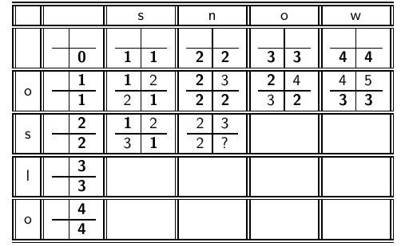
اسلاید 67
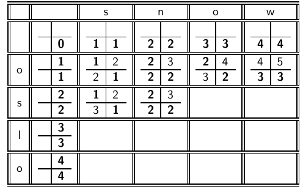
اسلاید 68
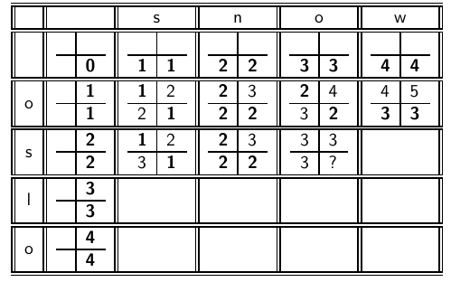
اسلاید 69
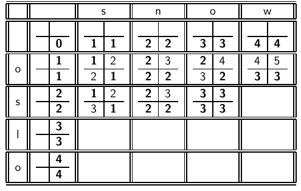
اسلاید 70
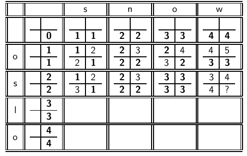
اسلاید 71
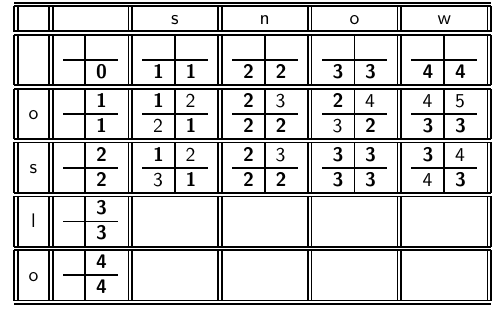
اسلاید 72
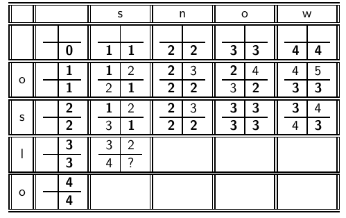
اسلاید 73
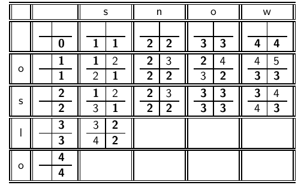
اسلاید 74
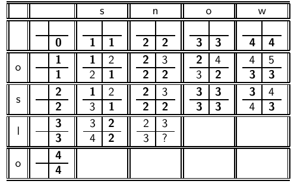
اسلاید 75
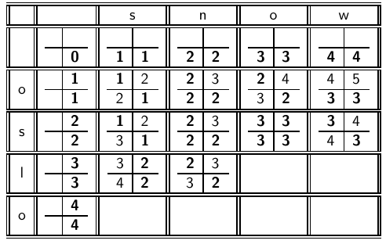
اسلاید 76
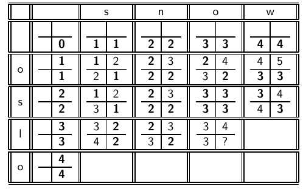
اسلاید 77
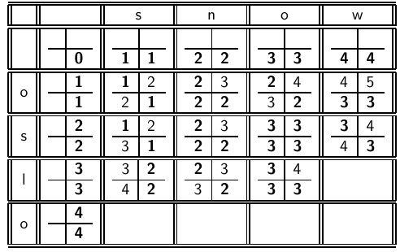
اسلاید 78
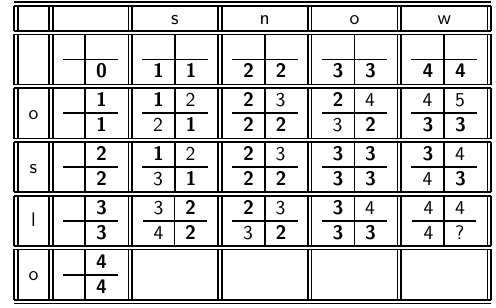
اسلاید 79
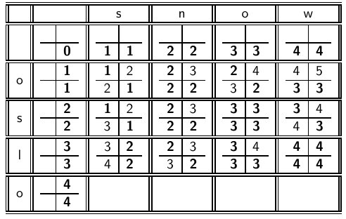
اسلاید 80
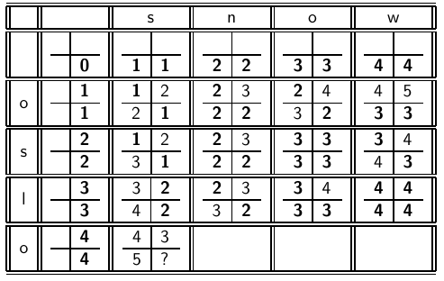
اسلاید 81
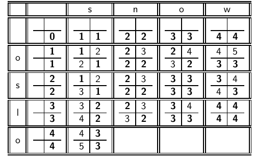
اسلاید 82
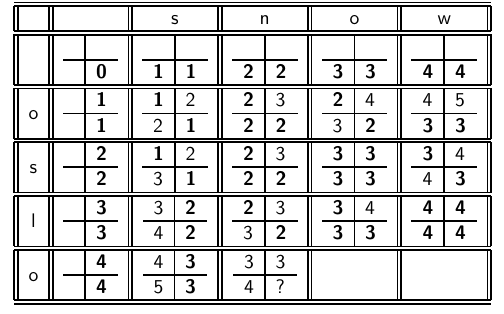
اسلاید 83
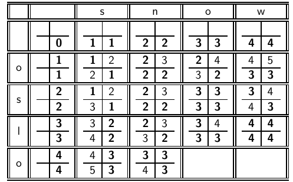
اسلاید 84
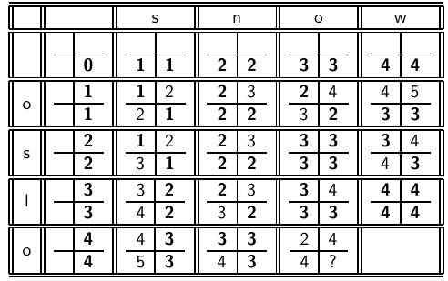
اسلاید 85
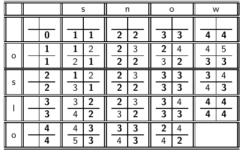
اسلاید 86
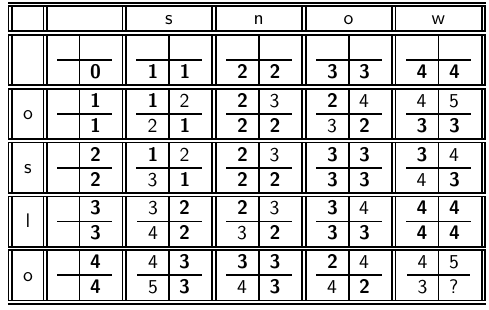
اسلاید 87
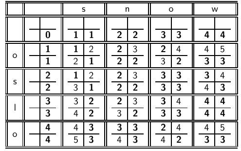
اسلاید 88
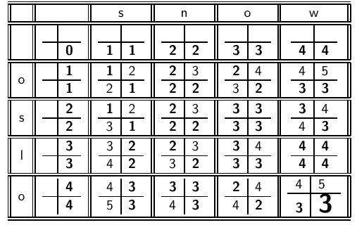
اسلاید 89
How do I read out the editing operations that transform OSLO into SNOW?
اسلاید 90
اسلاید 91
اسلاید 92
اسلاید 93
اسلاید 94
اسلاید 95
اسلاید 96
اسلاید 97
اسلاید 98
اسلاید 99
پیشنهاد املا: نامزد، رتبه و بافت
برای bordroom هفت bigram داخلی داریم: bo or rd dr ro oo om. برخلاف مثال wildcard، مرز اضافه نمیکنیم. همپوشانی گرمها راهی سریع برای ساخت فهرست کوتاه است؛ سپس میتوان نامزدها را با فاصلهٔ ویرایشی و بسامد سنجید.
در flew form munich هر کلمه جداگانه معتبر است، اما با تغییر تنها یک جایگاه و مقایسهٔ فراوانی عبارتها، flew from munich در مثال درس برنده میشود. با ۷، ۲۰ و ۳ جایگزین، این راهبرد ۳۰ عبارت اصلاحشده میسازد، نه حاصلضرب سه عدد. سابقهٔ پرسوجوها میتواند هزینهٔ اجرای مجدد همهٔ عبارتها را کم کند. اگر شواهد ضعیفاند، پیشنهاد دادن به کاربر از جایگزینی خاموش مناسبتر است.
تصحیحگر تاریخی Norvig ابتدا از big.txt فراوانی میآموزد. با شکستن واژه در مرزهای ممکن، حذف، درج، تعویض دو حرف مجاور و جایگزینی را میآزماید. نخستین گروه ناتهی را از میان خود واژهٔ شناختهشده، نامزدهای شناختهشدهٔ یک ویرایش، سپس دو ویرایش و سرانجام خود ورودی انتخاب میکند؛ درون آن گروه بسامد تعیینکننده است.
متن و شکلهای منبع · اسلایدهای 100 تا 107
اسلاید 100
Outline
Recap
Dictionaries
Wildcard queries
Edit distance
Spelling correction
Soundex
اسلاید 101
Spelling correction
Now that we can compute edit distance: how to use it for isolated word spelling correction – this is the last slide in this section.
k-gram indexes for isolated word spelling correction.
Context-sensitive spelling correction
General issues
اسلاید 102
k-gram indexes for spelling correction
Enumerate all k-grams in the query term
Example: bigram index, misspelled word bordroom
Bigrams: bo, or, rd, dr, ro, oo, om
Use the k-gram index to retrieve “correct” words that match query term k-grams
Threshold by number of matching k-grams
E.g., only vocabulary terms that differ by at most 3 k-grams
اسلاید 103
k-gram indexes for spelling correction: bordroom
اسلاید 104
Context-sensitive spelling correction
Our example was: an asteroid that fell form the sky
How can we correct form here?
One idea: hit-based spelling correction
Retrieve “correct” terms close to each query term
for flew form munich: flea for flew, from for form, munch for
munich
Now try all possible resulting phrases as queries with one word “fixed” at a time
Try query “flea form munich”
Try query “flew from munich”
Try query “flew form munch”
The correct query “flew from munich” has the most hits.
Suppose we have 7 alternatives for flew, 20 for form and 3 for munich, how many “corrected” phrases will we enumerate?
اسلاید 105
Context-sensitive spelling correction
The “hit-based” algorithm we just outlined is not very efficient.
More efficient alternative: look at “collection” of queries, not documents
اسلاید 106
General issues in spelling correction
User interface
automatic vs. suggested correction
Did you mean only works for one suggestion.
What about multiple possible corrections?
Tradeoff: simple vs. powerful UI
Cost
Spelling correction is potentially expensive.
Avoid running on every query?
Maybe just on queries that match few documents.
Guess: Spelling correction of major search engines is efficient enough to be run on every query.
اسلاید 107
Exercise: Understand Peter Norvig’s
spelling corrector
Soundex: شباهت آوایی با ورودی لاتین
در قرارداد این درس، حرف نخست ثابت میماند. برای بقیهٔ حروف از نگاشت زیر استفاده میکنیم:
AEIOUHWY → 0 BFPV → 1 CGJKQSXZ → 2
DT → 3 L → 4 MN → 5 R → 6
اول رقمهای برابرِ مجاور را یکی میکنیم، سپس صفرها را حذف میکنیم. در پایان با افزودن صفر یا کوتاهکردن، سه رقم کنار حرف اول نگه میداریم. در HERMAN رشتهٔ 06505 پیش از حذف صفر هیچ رقم تکراری مجاور ندارد؛ پاسخ H655 است. HERMANN هم همین کد را دارد. این برخورد دلیل یکی بودن دو نام نیست؛ کد آوایی فقط برای تولید نامزدهای مشابه است. جدول برای خط فارسی تعریف نشده است.
جمعبندی: wildcard از الگویی صریح پیروی میکند؛ تصحیح املایی از شواهد نوشتاری و بافت استفاده میکند؛ Soundex تلفظ تقریبی را با یک کد کوتاه نمایندگی میکند.
متن و شکلهای منبع · اسلایدهای 108 تا 115
اسلاید 108
Outline
Recap
Dictionaries
Wildcard queries
Edit distance
Spelling correction
Soundex
اسلاید 109
Soundex
Soundex is the basis for finding phonetic (as opposed to orthographic) alternatives.
Example: chebyshev / tchebyscheff
Algorithm:
Turn every token to be indexed into a 4-character reduced form
Do the same with query terms
Build and search an index on the reduced forms
اسلاید 110
Soundex algorithm
Retain the first letter of the term.
Change all occurrences of the following letters to ’0’ (zero): A, E, I, O, U, H, W, Y
Change letters to digits as follows:
B, F, P, V to 1
C, G, J, K, Q, S, X, Z to 2
D,T to 3
L to 4
M, N to 5
R to 6
Repeatedly remove one out of each pair of consecutive identical digits
Remove all zeros from the resulting string; pad the resulting string
with trailing zeros and return the first four positions, which will
consist of a letter followed by three digits
اسلاید 111
Example: Soundex of HERMAN
Retain H
ERMAN → 0RM0N
0RM0N → 06505
06505 → 06505
06505 → 655
Return H655
Note: HERMANN will generate the same code
اسلاید 112
How useful is Soundex?
Not very – for information retrieval
Ok for “high recall” tasks in other applications (e.g., Interpol)
Zobel and Dart (1996) suggest better alternatives for phonetic matching in IR.
اسلاید 113
Exercise
Compute Soundex code of your last name
اسلاید 114
Take-away
Tolerant retrieval: What to do if there is no exact match between query term and document term
Wildcard queries
Spelling correction
اسلاید 115
Resources
Chapter 3 of IIR
Resources at http://ifnlp.org/ir
Soundex demo
Levenshtein distance demo
Peter Norvig’s spelling corrector
خودت را بسنج
اگر فقط مکانهای TO و BE را داشته باشیم، آیا کل عبارت ششواژهای ثابت میشود؟
خیر؛ مکان or و not و فاصلههای نسبی همهٔ رخدادها نیز لازم است.
چرا moon در نامزدهای mon* دیده میشود؟
هر سه bigram را دارد، اما پیشوند mon را ندارد و در پالایش نهایی رد میشود.
آیا فاصلهٔ ۳ یعنی دقیقاً یک مسیر بهینه داریم؟
خیر. برای cat → catcat چند همترازی با سه درج وجود دارد.
چرا form را به تنهایی نمیتوان غلط اعلام کرد؟
خودش واژهٔ معتبری است؛ بافتی مانند flew from munich به تصمیم کمک میکند.